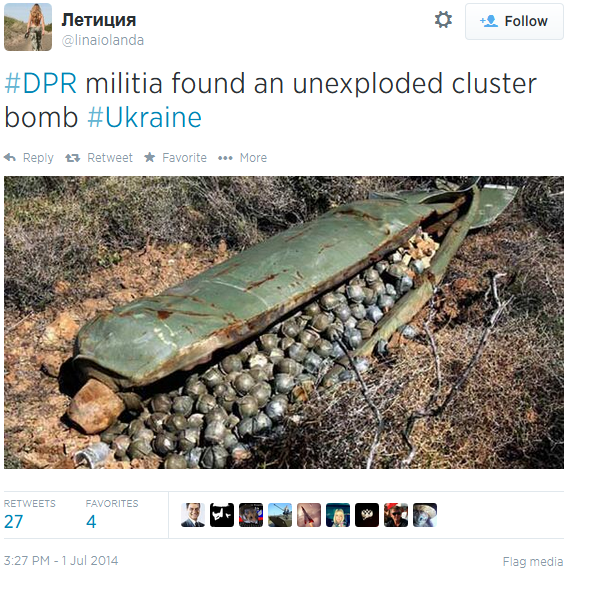

Фейк: фото неразорвавшейся кассетной бомбы под Донецком
В соцсетях и на некоторых новостных сайтах распространяется фотография кассетной бомбы, которая якобы была найдена боевиками в окрестностях Донецка и которую якобы использовали украинские военные.
Например, в Твиттере:
Также это фото на своей странице в Фейсбуке использовало российское новостное агентство Regnum, дописав даже слово «Фотофакт».Впрочем, на самом сайте новость была опубликована без иллюстрации.
На самом деле эта фотография не имеет никакого отношения к Украине.Она была сделана 9 ноября 2006 года фотографом агентства Associated Press Мохаммедом Заатари.На фото изображена кассетная бомба, которая была использована Израелем при обстреле Ливана.
В 2010 году вступил в силу запрет на использование кассетного оружия.Однако крупнейшие производители вооружения — США, Россия и Китай — его не признали.
Posted On: 2014-07-01T21:00:00

Content Date: 2014-07-01
Download Date: 2021-07-16
Document ID: L0C04FDRN